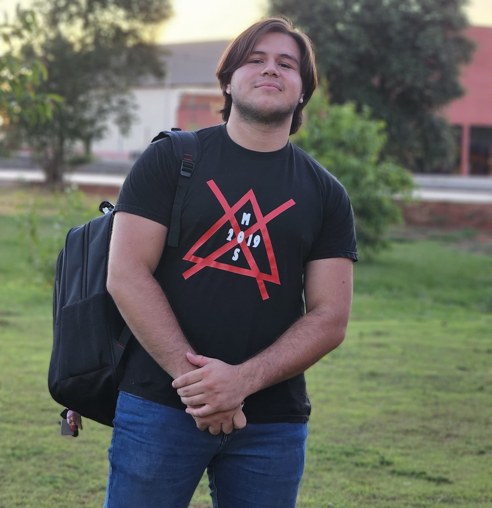

Licenciatura en Análisis de Sistemas En curso
Universidad Nacional de Canindeyú (UNICAN)
3.er año (de 5)

Técnico en Informática · Atención al Cliente
Estudiante de Licenciatura en Análisis de Sistemas (UNICAN), con formación técnica en informática y experiencia práctica en atención al cliente y ventas.
Universidad Nacional de Canindeyú (UNICAN)
3.er año (de 5)
Colegio General Nacional Don José Gervasio Artigas
Título obtenido
Casa y Pesca "El Ciervo"
Motivo de salida: renuncia por decisión personal.
Referencia: Ing. Amancio Báez, propietario — 0985 895 188
Comercial San Blas (Cervepar)
Motivo de salida: cierre de la empresa.
Referencia: Ing. Noelia Cáceres, administradora — 0973 226 630
Soy Tobías López, técnico en informática con una gran pasión por la tecnología, la música y las buenas conversaciones. Actualmente vivo con mis padres en Curuguaty y me considero una persona sociable por naturaleza. Tengo facilidad para caer bien a los demás gracias a mi carisma y sé captar la atención de quienes me rodean, especialmente al explicar o compartir algo.
En mi tiempo libre disfruto tocar la guitarra, jugar en consola con mis amigos, salir a compartir, pasar tiempo con gente cercana, tomar gaseosa y comer bocaditos. También participo activamente en mi iglesia. Valoro mucho la amistad, la buena onda y los momentos simples que se disfrutan con los demás.
Me destaco por ser tranquilo, responsable y con una gran capacidad para adaptarme a distintos ambientes. Siempre busco aprender, crecer y generar un impacto positivo donde me toque estar.
Wildson Gayoso
Jefe de ventas
Cel. +595 983 137 570